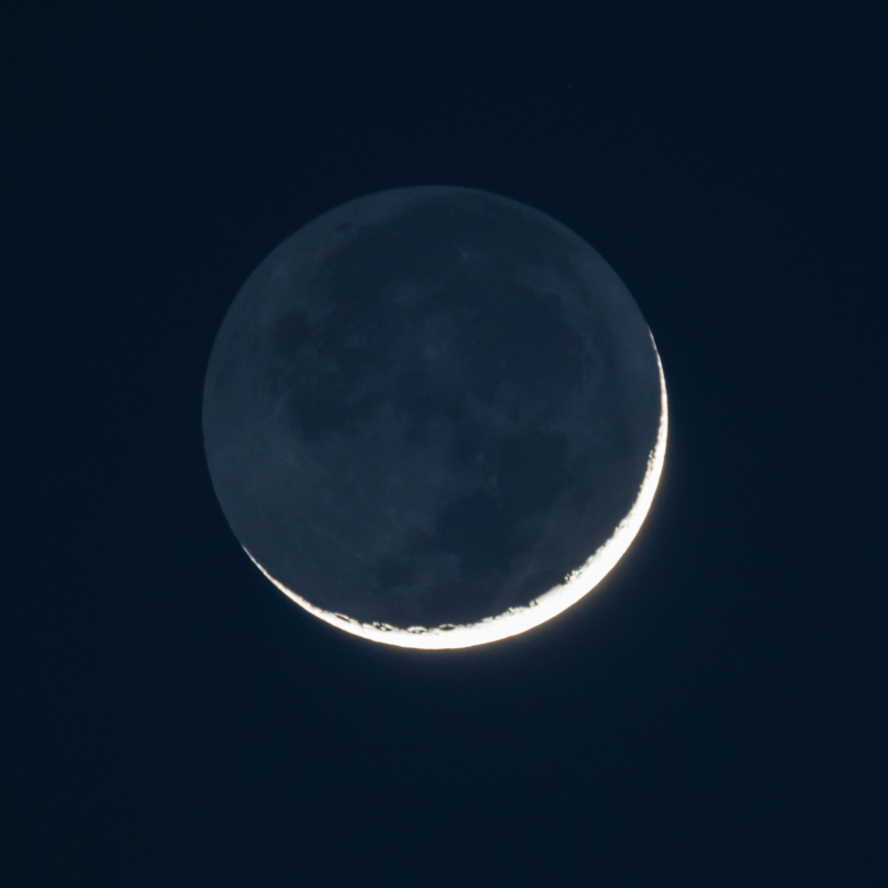

Earthshine is the faint illumination visible on the unlit portion of the Moon's disc, produced when sunlight reflected from Earth strikes the lunar surface and scatters back toward an observer. Because the illumination travels via two successive reflections — Sun to Earth, then Earth to Moon — it reaches the lunar surface at roughly 0.01% of direct sunlight intensity, or approximately 0.15 W/m². The phenomenon is also known as earthlight, lumen cinereum (ashen light), or, poetically, "the old Moon in the new Moon's arms."

Stephen Rahn / Wikimedia Commons (CC0)
.jpg){kind=link}
Earthshine is a specific instance of planetshine — the illumination of a natural moon by reflected light from its parent planet. Earth's albedo of approximately 30% far exceeds the Moon's ~12%, and Earth presents an angular diameter roughly four times larger than the Moon appears from Earth. As a result, Earth is a substantially brighter light source as seen from the lunar surface than the Moon is from Earth, making earthshine detectable with the naked eye under dark skies. It is most conspicuous during the thin waxing crescent and waning crescent phases, a few days either side of New Moon, when the lit crescent provides a brightness reference against which the ashen glow on the dark limb is clearly perceived.
Historical explanation. Around 1510, Leonardo da Vinci recorded in the Codex Leicester the first scientifically reasoned account of earthshine, attributing the glow to reflection from Earth's oceans. Modern measurements show this attribution to be incorrect in detail: ocean surfaces reflect only ~10% of incident sunlight, whereas clouds reflect ~50%. Clouds are therefore the dominant contributor to earthshine brightness, not open ocean.
Earth albedo monitoring. Between 1998 and 2017, the Big Bear Solar Observatory (BBSO) ran Project Earthshine, using telescopes to measure the brightness of earthshine systematically as a proxy for Earth's global albedo. The data show Earth reflected approximately 0.5 W/m² less by the end of the study period, corresponding to a ~0.5% decline in albedo, linked primarily to reduced cloud cover over the Pacific Ocean. Because albedo directly affects Earth's energy budget, earthshine measurements provide a simple, ground-based method for monitoring long-term climate changes.
Exoplanet biosignatures. Earthshine spectroscopy provides a proxy for what a distant observer would detect when studying Earth as an exoplanet. Spectra of earthshine recorded across optical and near-infrared wavelengths reveal absorption features from O2, CH4, and H2O in Earth's atmosphere, as well as the Vegetation Red Edge (VRE) — a sharp increase in reflectance above ~700 nm caused by chlorophyll in plant matter. These features serve as reference biosignatures for the design of future missions targeting Earth-like planets in other solar systems.
Observing earthshine. The phenomenon requires no optical aid, though binoculars enhance the contrast between the bright crescent and the ashen glow. The best conditions are a thin crescent Moon, dark skies away from light pollution, and the Moon positioned well above the horizon. Earthshine is not visible near Full Moon because the geometry places Earth in the Moon's shadow from the observer's perspective, and the fully illuminated disc overwhelms any subtle glow.